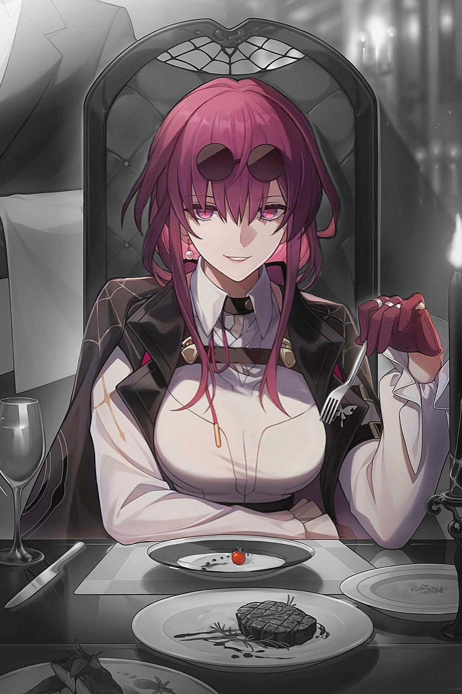
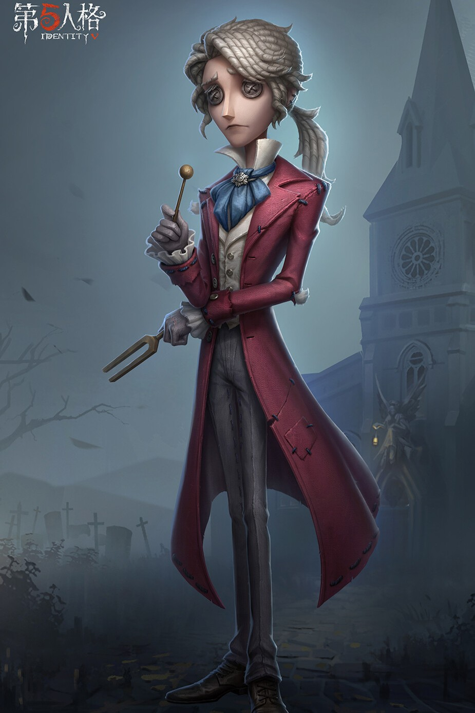
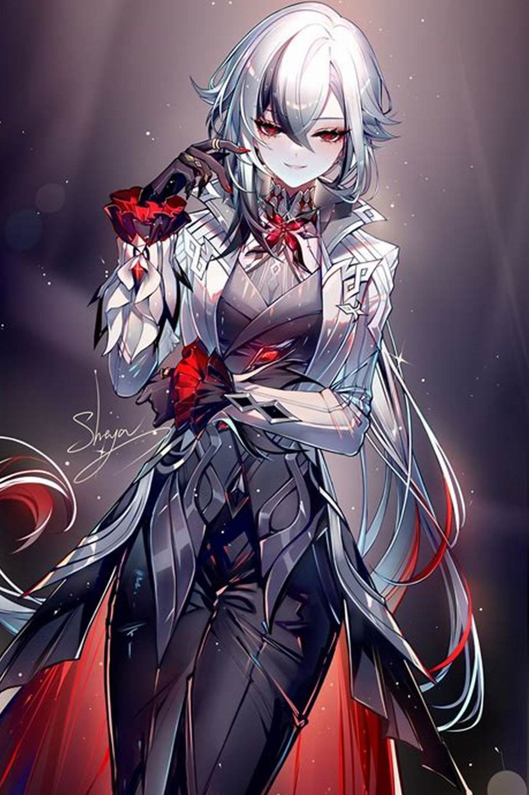

|  |
女人中的女人 雌性中的雌性 卡芙卡 罗浮通缉令通缉编号：L933012000020002010004，悬赏金一百零八亿九千九百万 。 “星核猎手”的核心成员，“命运的奴隶”艾利欧的副手。 故乡为“新巴比伦”，是一个不知道恐惧为何物的世界 。 正是因为缺乏恐惧，卡芙卡就无法体会自己生命的价值 。 潇洒从容的职业装丽人。利用言灵术，设计令开拓者吸收星核。 爱好是购买及整理大衣 。星核猎手的每个人都和艾利欧做了“交易”，卡芙卡也是如此。 她想要得到的东西非比寻常，因此她所做的每一件事都付出了巨大的代价 |
|  |
音！叉！抬！之！ 命运啊，我命你回转！ 弗雷德里克·克雷伯格儿时备受脑中幽灵折磨。 直到他第一次参加了父亲的演奏会，美妙的音乐如同天光破狱般， 盖过了一切杂音，包括他脑海中的恶魔低语。 从此他便迷恋上了音乐，唯有音乐才能让他摆脱脑海中的声音。 他相信音乐就是他在这个世界的救赎，是洪水中生命的方舟。 他以为他会像他家族中其他人一样，受到了缪斯女神的庇护，成为闪耀的艺术新星。 然而欧忒耳佩并未更爱他。 久而久之，人们对他的“欣赏” 更仰赖的是他出众的外貌和感情上“让淑女们难以自拔”的做派 而非几近枯竭的“才华”。 |
|  |
如果背叛能够获得利益 她会毫不留情地向女皇大人挥剑 阿蕾奇诺，本名佩露薇利 至冬国外交使团愚人众执行官第四席，代号“仆人” 沉静冷酷的外交官，“壁炉之家”所有孩子们畏惧又依赖的“父亲” 世人对愚人众、对这位执行官毁誉参半 但是对家中的大多数孩子来说 “父亲”都是他们人生中最重要的一个人 |